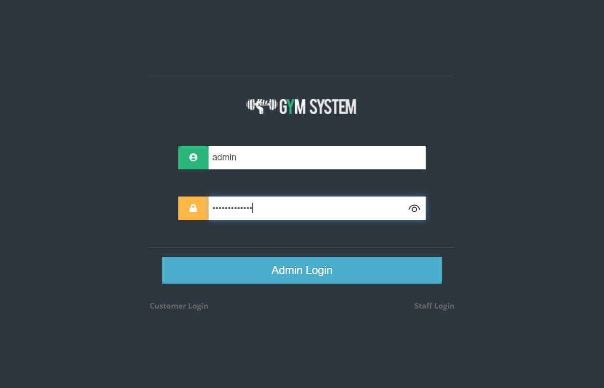
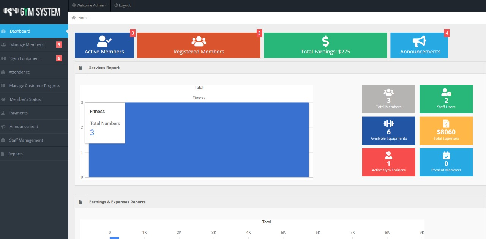

Hi, I'm Yash Satish Patil
Aspiring Developer
Computer Science & Business Systems (Third Year, JSPM's RSCOE)
I'm a dedicated student passionate about leveraging technology to solve real-world problems. With expertise in web development, AI, and competitive programming. Explore my portfolio to see my projects, skills, and achievements!
Get in Touch
About Me
I am a passionate Computer Science and Business Systems (CSBS) student currently in my 3rd year (T.Y. B.Tech), driven by a strong interest in Artificial Intelligence (AI), Web Development, and Competitive Programming.
Born and brought up in Jalgaon, I have always been curious about technology and its potential to solve real-world problems. My learning journey blends innovative software development, problem-solving skills, and business-oriented thinking, giving me a holistic approach to modern tech solutions.
I enjoy building intelligent applications, developing user-friendly web solutions, and sharpening my logic through coding challenges. With every project and learning opportunity, I aim to grow as a skilled developer and contribute to impactful technological innovations.
Career Objective: To become a skilled developer and enjoy the cubicles life and explore the real-world as much as I can.
Treasurer – ACBS
Technical Skills

HTML

CSS

JavaScript

Python

C++

SQL
Projects
Gym Management System
Tools: Java, MySQL | Role: Developer | Status: Completed
GitHub Link


Portfolio Website
Tools: HTML, CSS, JS | Role: Developer | Status: Ongoing
GitHub Link
Academics
- 10th – ST Teresa Convent Higher English Medium School – 89%
- 12th – MJ College – 82%
- B.Tech – JSPM's RSCOE (SPPU) – Current: Vth Semester (SGPA: Sem III - 8.95, Sem IV - 8.68 | CGPA: 8.85)
Certifications
- Deloitte Cyber Job Simulation (Cyber security) - Completed March 4th, 2025
- IBM SkillsBuild - Artificial Intelligence Fundamentals - Completed 01 Jan 2025
- Certificate of Participation in "ProQuest: The Ultimate Challenge" (JSPM's RSCOE) - 24th and 25th Jan 2025
Co/Extra-Curricular
- Treasurer – ACBS
- Technical workshops and coding contests
- Active participation in "ProQuest: The Ultimate Challenge"
Career Goals
Short-term: To master Web Development and Data Structures & Algorithms, gaining strong technical skills and practical experience that will help me secure a developer role in a reputed organization.
Long-term: To build a successful and impactful career in the tech industry, continuously learning new technologies, contributing to innovative projects, and growing into a well-rounded professional who can make meaningful contributions to the field.
Resume
Yash Satish Patil
Email: Yashpatil070205@gmail.com | Phone: (+91) 7249096575
LinkedIn: linkedin.com/in/yash-patil
Skills
- Java
- HTML, CSS, JavaScript
- Python
Education
- Computer Science and Business Systems | JSPM’s RSCOE, Pune — CGPA: 8.91
- Class XII — 83% | 2023
Experience
Technology Job Simulation | Deloitte (Virtual) – Forage (June 2025)
- Code and development projects
- Hands-on exposure to software problem-solving in a business context
- Experience using industry practices to approach client challenges
Academic Projects
- Student Portfolio Website – Designed a responsive personal portfolio website using HTML & CSS to showcase background, skills, and achievements.
- Gym Management System – Built a responsive site using HTML, CSS & JavaScript for managing gym operations.
Position of Responsibility
Treasurer | JSPM Rajarshi Shahu College of Engineering, Pune (ACBS Club)
Achievements / Hobbies
- Interested in playing chess and cricket
- Fond of watching Formula 1 (F1) sports
Download Resume